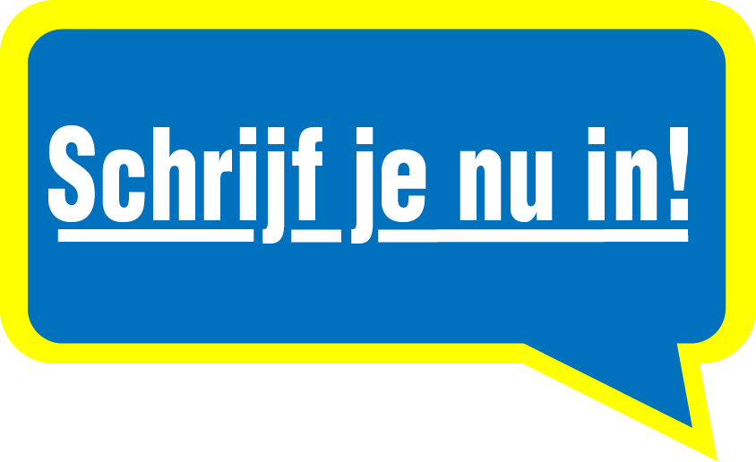

Future Comp
Rugby U23 team t'Gooi
Het onder-23 team van RC 't Gooi dat bestaat sinds 2023 strijd in de Future Competitie om het Nederlands kampioenschap. Om kampioen te moeten worden zullen we moeten strijden om in de top 6 van de poel moeten komen om kans te hebben op de trofee. Vorig jaar is het ons al gelukt, maar doen we het nog een keer?

Rugby club t'Gooi is een van de oudste clubs van Nederland met vorig jaar een groot jubileumfeest samen met het WK 2023 in Frankrijk. Na meer dan 80 jaar sinds de oprichting heeft de club meer dan 350 leden. Dit komt door onze grote investering in onze jeugd. Met het “Future” onder 23 team willen wij ervoor zorgen dat de overstap van onze grote jeugd naar de senioren, gemakkelijker en beter kan gaan.
Dat zorgt weer voor een goede sfeer en een rijke selectie van spelers bij onze eigen senioren en spelers die naar het buitenland gaan. Ook is het een van onze belangrijkste doelen om rugby zo leuk mogelijk te maken voor de jeugd zodat de jeugd langer blijft spelen.